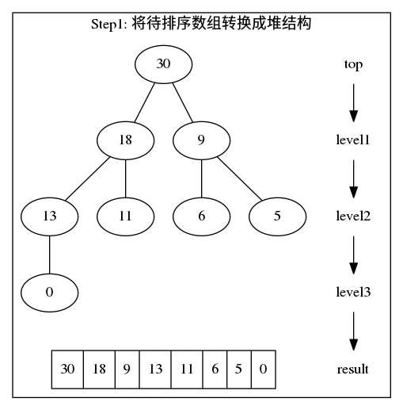

堆排序
堆排序（Heapsort） 是指利堆这种数据结构所设计的一种排序算法。堆积是一个近似完全二叉树的结构，并同时满足堆积的性质：即子结点的键值或索引总是小于（或者大于）它的父节点。1
图例： 
1 算法描述
- 最大堆调整（Max\Heapify）：将堆的末端子节点作调整，使得子节点永远小于父节点
- 创建最大堆（Build\Max\Heap）：将堆所有数据重新排序
- 堆排序（HeapSort）：移除位在第一个数据的根节点，并做最大堆调整的递归运算
2 算法演示图
待排序数组：



重复Step2,Step3直到排序完成。

3 复杂度
平均时间复杂度:O(nlongn); 空间复杂度:Θ(1)。
4 Java实现
public static int[] heapSort(int[] data) { // 将待排序数组，转换为最大堆 convertToHeap(data, data.length); for (int i = data.length - 1; i > 0; i--) { int temp = data[0]; data[0] = data[i]; data[i] = temp; // 最大堆index0数据发生变化，以此从index0开始重新构建最大堆 makeMaxHeapify(data, i , 0); } return data; } public static int[] convertToHeap(int[] source, int length) { int startIdx = getParentIdx(length - 1); for (int i = startIdx; i >= 0; i--) { makeMaxHeapify(source, length, i); } return source; } public static void makeMaxHeapify(int[] data, int length, int idx) { int leftChildIdx = getLeftChildIdx(idx); int rightChildIdx = getRightChildIdx(idx); int largestIdx = idx; if (leftChildIdx < length && data[leftChildIdx] > data[idx]) { largestIdx = leftChildIdx; } if (rightChildIdx < length && data[rightChildIdx] > data[largestIdx]) { largestIdx = rightChildIdx; } // 父节点发生变化需要调整其子节点，已满足最大堆要求。 if(largestIdx != idx) { // 性能低于通过临时参数直接交换值 /*data[idx] ^= data[largestIdx]; data[largestIdx] ^= data[idx]; data[idx] ^= data[largestIdx];*/ int temp = data[idx]; data[idx] = data[largestIdx]; data[largestIdx] = temp; makeMaxHeapify(data, length, largestIdx); } } public static int getLeftChildIdx(int parentIdx) { return (parentIdx<<1) + 1; } public static int getRightChildIdx(int parentIdx) { return (parentIdx<<1) + 2; } public static int getParentIdx(int childIdx) { return (childIdx - 1) >> 1; }
5 性能测试
本人PC上做的性能测试，仅简单测试了一下堆排序的性能，可能不是非常严谨与客观，结果仅作参考吧。
| 数组长度 | 耗时 .ms |
|---|---|
| 10000 | 11 |
| 100000 | 23 |
| 500000 | 106 |
| 1000000 | 225 |
从上述测试结果上，HeapSort的性能和稳定性还是非常不错的。之后结合上其它排序算法做一个比较。